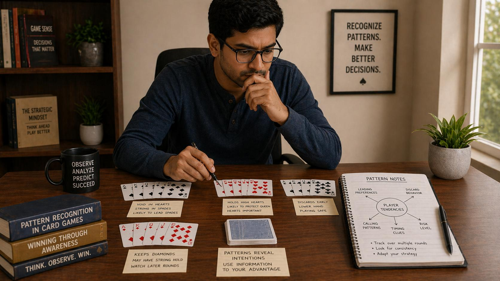

🪶 Introduction
Every Callbreak player, whether they realize it or not, develops habits and tendencies. They play certain suits more confidently, hesitate before specific calls, or change their behavior when they have strong versus weak hands. Pattern recognition is the skill of identifying these repeating behaviors, interpreting their meaning, and using that information to make better predictions about what will happen next.
🖼️ Callbreak Pattern Recognition Overview

🎯 What Is Pattern Recognition?
Pattern recognition in Callbreak is the ability to identify consistent behaviors or trends in how players act and to use those observations to inform your own decisions. Instead of treating every situation as unique, you begin to recognize that players often act in recognizable, repeatable ways.
Patterns can exist at multiple levels:
- Individual card plays within a single suit
- Betting and calling tendencies across rounds
- Behavioral changes based on hand strength
- Rhythm and tempo patterns in play speed
The more patterns you can identify and correctly interpret, the better your predictions will be.
🃏 Card Play Patterns in Individual Suits
The most immediate patterns occur within the play of a single suit. Recognizing these helps you anticipate who holds remaining cards.
Watching Card Elimination
When a suit is led multiple times, observe how quickly players run out of cards in that suit. If a player plays low cards consistently in a suit, they likely have a short suit — meaning they may be able to trump or discard soon.
High Card Sequence Patterns
If you see a player win a trick with what appears to be the highest remaining card in a suit, note whether they continue to play aggressively in that suit. Winning with a high card often means they are "cleaning up" a suit before it becomes dangerous.
Trump Usage Patterns
Track how and when players use trump cards. Some players use trump immediately when unable to follow suit. Others hoard trump for critical moments. Both patterns reveal information about hand strength and strategy.
📊 Calling Patterns Across Rounds
A player's calling behavior across multiple rounds reveals their general approach to risk and their hand evaluation ability.
Calling Styles to Recognize
- High Callers: Tend to call more tricks than their hands warrant. May be optimistic, aggressive, or trying to create pressure.
- Conservative Callers: Tend to undercall relative to their hand strength. Prioritize certainty over maximizing points.
- Adaptive Callers: Call based on context — their hand, their partner's call, the game score. Harder to predict.
⏱️ Play Tempo and Timing Patterns
The speed at which a player makes decisions carries information. Patterns in tempo reveal tendencies and sometimes hand state.
Fast Decisions
Players who decide quickly often have straightforward decisions — they have an obvious play and do not need to think. This can indicate either strong hands or weak hands with no good options.
Slow Decisions
Hesitation typically means the player is weighing options. This may indicate they have multiple playable cards and are evaluating trade-offs.
Changes in Tempo
Sudden changes in decision speed are significant signals:
- A normally fast player suddenly hesitating may have encountered a new situation
- A slow player suddenly playing quickly may have decided on a high-risk play
- Quick play after slow deliberation may indicate a change of mind
👤 Behavioral Changes Based on Hand Strength
Experienced players often show subtle changes in behavior when their hand is strong versus weak.
Signs of Possible Strength
- More confident lead selection
- Playing high cards earlier rather than conservatively
- Using trump more freely
- Appearing engaged and decisive
Signs of Possible Weakness
- Leading with lower-value cards
- Playing hesitantly or appearing uncertain
- Conserving high cards when they might have been played
- Passing on opportunities to win tricks
🤝 Partner Pattern Recognition and Communication
Your partner is your most important relationship at the table. Recognizing their patterns is essential for effective teamwork.
Common Partner Patterns
- Suit Priority Patterns: Some partners consistently prioritize certain suits, indicating length and strength
- Support Play Patterns: Playing low cards in a suit you are leading may signal they cannot help in that suit
- Trumps-down Patterns: Using trump early may signal they have more available or are protecting a weak area
⚠️ Deviation from Patterns: The Most Important Signal
Sometimes the most significant information comes not from a pattern itself, but from when a player deviates from their established pattern.
Why Deviations Matter
Patterns provide a baseline for prediction. When a player behaves differently from their norm, something has changed. This usually means:
- Their hand has changed in a way that affects their decisions
- The round situation has forced a strategic adjustment
- They are attempting a specific play that breaks their usual approach
❓ FAQ
What is pattern recognition in Callbreak?
Pattern recognition is the ability to identify consistent behaviors or trends in how players act and use those observations to inform your own decisions.
How do I identify meaningful patterns?
Look for repetition across multiple rounds. Track card play, calling tendencies, play tempo, and behavioral changes. Demand repetition before establishing a pattern.
What are the most important patterns to watch?
Trump usage patterns, calling tendencies, play tempo changes, and deviations from established patterns are the most significant signals.
How do I avoid false patterns?
Demand repetition before establishing a pattern, update your reads when new evidence warrants, and distinguish between probable patterns and possible patterns.
🧾 Summary
Pattern recognition is a learnable skill that improves Callbreak decision-making:
- Track card play within suits to anticipate who holds remaining high cards
- Observe calling tendencies to understand how opponents approach risk
- Note play tempo patterns to gain insight into decision confidence
- Watch for behavioral changes that may signal hand strength shifts
- Learn your partner's individual patterns to better support their strategy
- Pay special attention to deviations from established patterns
- Combine multiple signals for stronger, more reliable reads
- Stay objective and avoid over-interpreting isolated events
- Be aware of your own patterns to avoid becoming predictable
Pattern recognition sharpens with attention and practice. The more you consciously observe and reflect on what you see, the more accurately you will predict opponent behavior and the better your decisions will become.
🔥 SEO Keywords
callbreak pattern recognition, how to read callbreak players, callbreak behavior patterns, callbreak predicting moves, callbreak strategy reads, callbreak opponent analysis